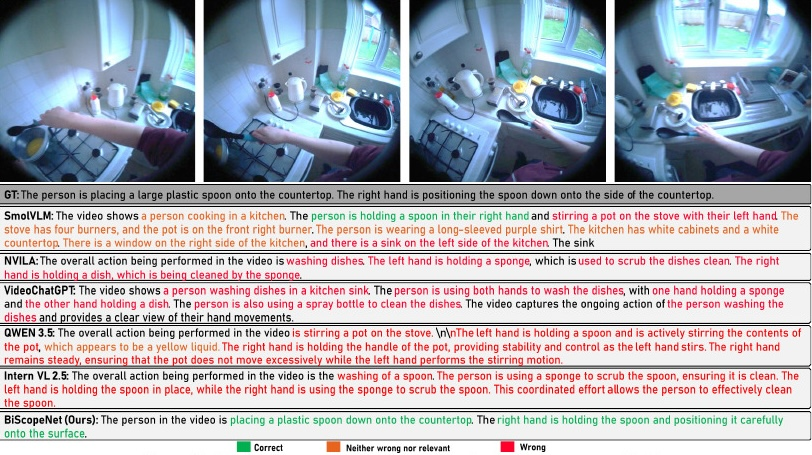

Video-language models are increasingly capable of describing egocentric activities, but they often struggle to distinguish the fine-grained roles of the left and right hands. We introduce sub-action detection, a task requiring models to recognise the high-level action together with each hand's role and manipulated objects. To address this, we propose BiScopeNet, a backbone-agnostic framework that augments existing video-LLMs without changing their vision encoders or language models. BiScopeNet combines FocusAlign, a gated text-guided attention module that emphasises action-relevant visual cues, with MetaLoss, a masked and object-weighted objective that prioritises visually grounded terms. We also introduce BiScopeCap-100K, a large-scale egocentric video benchmark with dense captions describing high-level actions, left/right hand roles, manipulated objects, and spatial metadata. Across multiple pretrained VLMs, BiScopeNet improves fine-grained action, hand-role, and object recognition while substantially reducing unstructured caption outputs.
A conventional caption may correctly identify the activity while still missing how the manipulation is being performed.
BiScopeNet aims to identify which hand holds, supports, moves, cleans, pours, cuts, or otherwise manipulates each object during the ongoing activity.
Standard projectors treat visual tokens uniformly. FocusAlign instead uses text-guided cross-attention to re-weight video features around action- and hand-relevant evidence.
Text-to-video attentionAdaptive gatingResidual refinement
The gated residual design preserves the original visual representation while allowing the model to increasingly focus on sub-action cues during training.
Structured captions contain useful spatial metadata, but those tokens should not dominate language modelling. MetaLoss masks metadata spans and upweights object words.
Mask metadataObject weightingGrounded supervision
This concentrates gradient signal on semantically important actions, hands, and manipulated objects without adding an auxiliary scoring model.
Fine-grained hand-role understanding needs supervision that existing egocentric datasets only partially provide. BiScopeCap-100K standardises and enriches data from EPIC-KITCHENS / EPIC-VISOR, Ego4D, HOI-QA, and HD-EPIC into a unified video-level format containing high-level actions, explicit left/right hand roles, manipulated objects, and spatial metadata.
The gains are not tied to one model family. With the NVILA backbone, BiScopeNet reaches 45.5% action recognition, 44.9% right-hand recognition, 41.2% left-hand recognition, and 58.9% object recognition, while producing zero unstructured outputs. With VideoChatGPT, the largest gains are especially clear in action and object recognition, and replacing CLIP with DINOv3 improves performance further.

Baselines often misidentify the manipulated object, swap left/right hand roles, or produce long but weakly grounded descriptions. BiScopeNet produces shorter, more structured outputs that more closely match the visible hand-object interaction. The qualitative examples also show a second benefit: substantially fewer malformed, unfinished, or tag-filled responses.
Does the caption correctly identify the overall action being performed?
Does it correctly identify what the right hand is doing?
Does it correctly identify what the left hand is doing?
Are the manipulated objects correctly identified and grounded in the action?
The paper uses an independent LLM-as-a-judge protocol to score these four dimensions. A manual check on 100 predicted captions shows close agreement between automated and human scoring, with overall action accuracy differing by less than one percentage point and the hand/object metrics typically within a few percentage points.
Read the paper for the full method, dataset construction, ablations, and qualitative analysis.
Rather than only naming the overall activity, sub-action detection requires the model to explicitly recognise the role of each hand and the objects being manipulated within that ongoing action.
No. The framework operates at the projection stage between the vision encoder and language model. In the reported experiments, the core vision encoder and LLM remain frozen while FocusAlign is trained.
The spatial metadata is useful as structural guidance, but predicting markup and bounding-box tokens is not the end task. MetaLoss masks those spans from the language loss while increasing the weight of visually grounded object terms.
The experiments integrate BiScopeNet into both NVILA and VideoChatGPT and also test several vision encoders. The framework improves performance across these settings, supporting its backbone-agnostic design.
The paper states that the dataset, derived annotations, and curation scripts will be released publicly upon acceptance, while the underlying raw videos remain governed by their original dataset licences.
@inproceedings{Rahmaniboldaji2026BiScopeNet,
author = {Sadegh Rahmaniboldaji and Filip Rybansky and Quoc Vuong and Frank Guerin and Andrew Gilbert},
title = {Sub-actions in Action: Text-Guided Hand-Role Alignment for Sub-Action Recognition},
booktitle = {British Machine Vision Conference (BMVC)},
year = {2026}
}